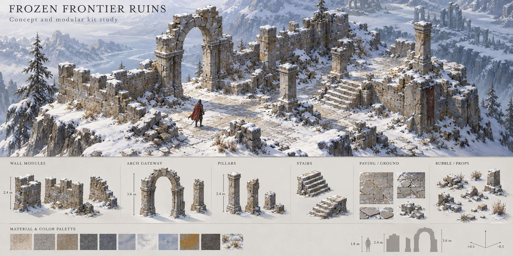

Frozen Frontier Ruins
Concept and initial modular kit · Arkadia · Review version 1. Weathered limestone, ivory snow and muted blue shadows. Full-map placement remains a later decision.
Concept direction

Assembly from delivered sprites
The composition below uses the actual PNG modules and manifest pivots. The human silhouette is 1.8 m (about 67 world pixels), matching the existing hero display height. Cyan crosses mark footprint centers; snow caps use attachment centers. This is a visual assembly study, before collision or occlusion integration.
Transparent modular kit · 15 sprites
Each direction was generated separately to preserve upper-left lighting. The checkerboard is gallery UI; exported PNGs retain alpha. Pivots are pixel coordinates after trimming; scale converts export pixels to Arkadia world pixels.
Target ground projection: (u−v)×64, (u+v)×32; one tile = 3 m. Generated painted geometry has small deviations: validate modular joins and tune footprint pivots before gameplay placement. No runtime preload was added.